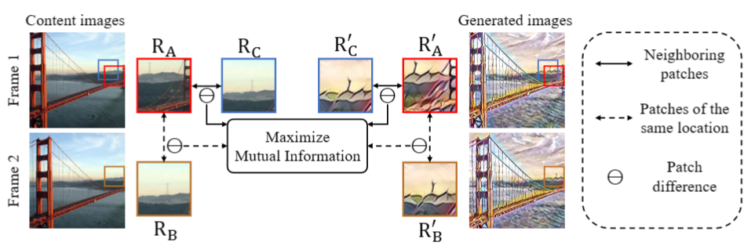

CCPL
CCPL: Contrastive Coherence Preserving Loss for Versatile Style Transfer
ECCV Oral 2022
Abstract:
在本文中，我们的目标是设计一种通用的风格转换方法，能够在训练过程中不需要看到视频的情况下，同时进行艺术风格、照片现实风格和视频风格的转换。以往的单帧方法通过对图像加上很强的约束来保持时间一致性，但这样做在很多情况下都会寄。
Instead，我们做了一个mild and reasonable的假设：global inconsistency is dominated by local inconsistencies，局部的不一致性决定整体不一致性，从而提出了一个genetic（通用的）Contrastive Coherence Preserving Loss（CCPL），应用于local patches。CCPL能够保持源的coherence而不会降低风格化，此外，还具有neighbor-regulating mechanism，能够极大减少局部失真，提高质量。
此外，为了更好融合content和style特征，我们提出了一个Simple Covariance Transformation（SCT）来有效对齐内容特征和风格特征的二阶统计量。实验证明，当有CCPL的时候，模型对通用风格转换good。
Introduction：
以前有的方法用光流加强一致性 ，但是光流计算量大而且不一定准，有的用单帧正则化，试图从context feature到融合feature的线性变换。没有明确的指导，容易寄。局部噪声带来inconsistency，因此，从更宽松的局部约束开始。
如下图所示，我们的想法很简单，style图像中相同位置的R‘A和R’B所表示的块之间的变换应当与相邻两context帧RA和RB的变化相似。

现有的工作，视频风格迁移，有的用光流，有的不用光流，用光流，计算量大有伪影，拉gay。
Method
Contrastive Coherence Preserving Loss:
给定两帧和，其中是帧间时间间隔，我们假设生成的图像和间的difference线性相关于原帧C间的difference，当很小时：
其中表示a和b之间的差异，这个constraint对整个图像太strict了，不过对只发生简单图像transformation（如平移旋转等）的patches是合理的。在这一假设下，我们提出了一个Contrastive Coherence Preserving Loss（CCPL）应用于local patches来加强这一constraint。当很小时，相邻块的loss等同于两帧的对应块？对单帧进行操作节省计算开销。
为了应用CCPL，首先将生成图像G和其content input C输入到fixed image encoder E里去，得到特定层的feature map，记为和，随后，从中随机抽取N个向量（下图中的红点），记为，其中x从1到N，最后，我们取的八个最近相邻向量（蓝色的点），记为，，y从1到8。然后在相同的位置对进行采样，分别得到和，操作如下图所示：
相邻向量的difference用下述方法来衡量：
其中表示向量减法，为了实现第一条等式，简单的想法是让dg和dc相等，但这样的约束与风格迁移的目的相矛盾。受对比学习最新进展的启发，我们尝试最大化“positive” difference向量pairs之间的mutual information，A pair只在Cf和Gf的difference vector之间定义。即，相同位置的difference vectors定义为dg和dc之间的positive pairs，否则negative。
underlying intuition也很好理解：与其他随机pairs相比，相同位置的difference vectors在latent space中应该是最相关的。
在计算infoNCE损失之前，按照 [10]的设计构建了一个两层MLP，将difference vectors映射到一个unit sphere上并归一化，公式：
其中为temperature超参，默认为0.07。这样做，视频的temporal consistency显著提高，重构结果也令人满意甚至更好（CCPL消除了dirty texture）。
该损失避免与风格损失的直接矛盾，以确保生成图像和style图像的coherence。同时，即使不用其他帧的信息，也能提高生成视频的temporal consistency。CCPL的复杂度是.其中括号里的为sampled difference vectors的数量，CCPL可以作为一个简单的插件来扩展其他生成的方法。
Simple Covariance Transformation：
在CCPL保证temporal consistency的前提下，我们的下一个目标是设计一个简单而有效的mudule，用于融合content和style features，以实现丰富的stylization。Huang提出AdaIN直接对齐content和style的channel-wise均值和方差。虽然简单，但是忽略了通道间的相关性，后续的工作Linear等证明了通道相关性是有效的。Linear用了点通道注意力，将style特征的二阶统计数据迁移到相应的content特征上，但是我们发现Linear能简化。
为了结合AdaIN和Linear的优点，我们设计了一个Simple Covariance Transformation（SCT）来融合style和content，如下图所示，首先，对content feature用均值方差做归一化，然后对style feature用通道均值做归一化，然后得到了和。为了降低计算成本，我们将这俩feed到cnet和snet中去，逐步降低channel维数（512-32），得到和，然后flatten ，并计算其covariance matrix ，得到channel-wise的相关性。
在此之后，简单对和做矩阵乘法来融合特征，得到。最后，用单个卷积恢复通道数（32-512），并在发送到解码器之前添加original style feature的channel mean，也就是。
结合Encoder-Decoder，整个网络命名为SCTNet，编码器为预训练的VGG，stylization的结果更轻更快，与Linear相当。
Loss Function：
除了先前提出的Lccp，我们还用了其他俩经典损失content损失和style损失。
时序一致性评估方法参考ReRe。
Ablation Studies：
一顿消融实验，得到CCPL层数为3，每层采样64个，损失权重0.5时最好，
2023 3.13 spade no flow 49
bs:2 seq len:20 loss: lpips(yuan)+ssim+mse
2023 3.14 spade no flow trash 49 trashtrash
bs:2 seq len:20 loss: lpips(new)+ssim+mse
2023 3.14 spade no flow
bs:2 seq len:20 loss: lpips(style+feature) 烂中烂
2023 3.15 spade no flow
bs:2 seq len:20 loss:lpips(new)